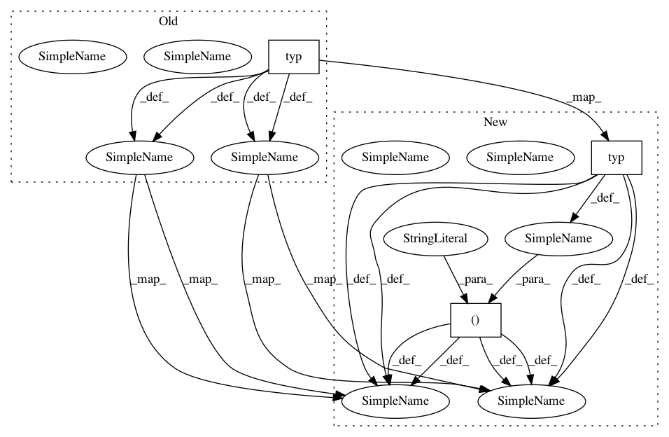

1e0e89516bd9780b632b0a8ea5bcd371d72c9fba,upsetplot/tests/test_data.py,,test_from_contents_vs_memberships,#,93
Before Change
@pytest.mark.parametrize("typ", [set, list, tuple, iter])
@pytest.mark.parametrize("id_column", ["id", "blah"])
def test_from_contents_vs_memberships(data, typ, id_column):
contents = {"cat1": typ(["aa", "bb", "cc"]),
"cat2": typ(["cc", "dd"]),
"cat3": typ(["ee"]),
}
// Note that ff is not present in contents
data_df = pd.DataFrame(data,
index=["aa", "bb", "cc", "dd", "ee", "ff"])
baseline = from_contents(OrderedDict(contents), data=data_df,
id_column=id_column)
// compare from_contents to from_memberships
expected = from_memberships(memberships=[{"cat1"},
After Change
@pytest.mark.parametrize("typ", [set, list, tuple, iter])
@pytest.mark.parametrize("id_column", ["id", "blah"])
def test_from_contents_vs_memberships(data, typ, id_column):
contents = OrderedDict([("cat1", typ(["aa", "bb", "cc"])),
("cat2", typ(["cc", "dd"])),
("cat3", typ(["ee"]))])
// Note that ff is not present in contents
data_df = pd.DataFrame(data,
index=["aa", "bb", "cc", "dd", "ee", "ff"])
baseline = from_contents(contents, data=data_df,
id_column=id_column)
// compare from_contents to from_memberships
expected = from_memberships(memberships=[{"cat1"},
In pattern: SUPERPATTERN
Frequency: 3
Non-data size: 3
Instances
Project Name: jnothman/UpSetPlot
Commit Name: 1e0e89516bd9780b632b0a8ea5bcd371d72c9fba
Time: 2019-05-30
Author: joel.nothman@gmail.com
File Name: upsetplot/tests/test_data.py
Class Name:
Method Name: test_from_contents_vs_memberships